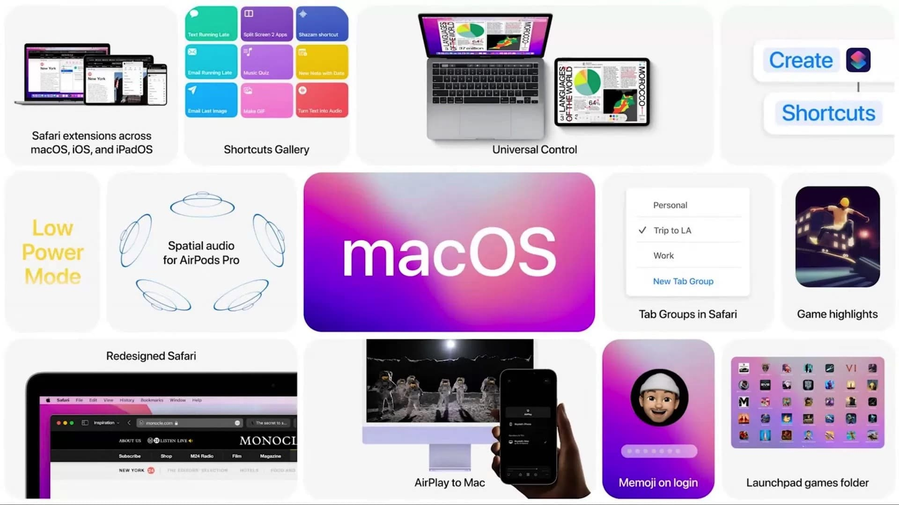
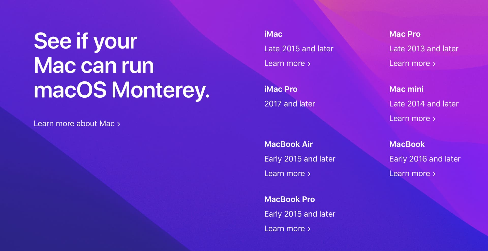

السلام عليكم ورحمة الله وبركاتة
رسميا ابل اليوم تصدر ماك مونتيري, MacOS 12 Monterey المنتظر 
ابرز التغييرات في النظام
تم ذكر كل التغييرات في التحديث في هذا الموضوع
هاكنتوش
أبرز التغييرات مونتيري على الهاكنتوش
- الغاء دعم كروت انفيديا بالكامل
- وداعا للجيل الثالث, ماك مونتيري يتطلب جيل الرابع فما اعلى من معالجات انتل
تغيير طريقة عمل تعريفات البلوتوث بالكامل
تم تغيير طريقة عمل تعريفات البلوتوث حيث العديد من التعريفات ال Injector لن تعمل الان. منها:
- IntelBluetoothInjector.kext لكروت Intel
- BrcmBluetoothInjector.kext لكروت Broadcom
ايضا قم بتحديث كامل كيكستات ال Firmware مثل:
- IntelBluetoothFirmware.kext
- BrcmPatchRAM2/3.kext + BrcmFirmwareData.kex
وقم باضافه BlueToolFixup وهو ضروري لكل الكروت الغير مدعومه بشكل رسمي
انواع SMbios تم ايقاف دعمها

- iMac15,x فما اقدم
- Macmini6,x فما اقدم
- MacBookAir6,x فما اقدم
- MacBookPro11,3 فما اقدم
- MacBookPro11,4 و 11,4 مازالو مدعومين
ايقاف التحديثات الهوائية لاي ماك لا يستخدم Secure Boot من انواع حديثة.
اي SMBios مخصص لماك يوجد فيه شريحة T2 لن يستقبل تحديثات هوائية بعد الان الا اذا كان الجهاز مفعل فيه ال Secure Boot.
لذلك يجب ان يكون اعداد Secure boot في الكونفق Default
الا في حاله كان ال SMbios الخاص بك قديم ولا يحتوي على t2 فلا يفرق.
قائمة ال SMBIOS التي تحتوي على شريحة T2
| SMBIOS | أقدم أصدار ماك مدعوم |
|---|---|
| iMacPro1,1 (December 2017) | 10.13.2 (17C2111) |
| MacBookPro15,1 (July 2018) | 10.13.6 (17G2112) |
| MacBookPro15,2 (July 2018) | 10.13.6 (17G2112) |
| Macmini8,1 (October 2018) | 10.14 (18A2063) |
| MacBookAir8,1 (October 2018) | 10.14.1 (18B2084) |
| MacBookPro15,3 (May 2019) | 10.14.5 (18F132) |
| MacBookPro15,4 (July 2019) | 10.14.5 (18F2058) |
| MacBookAir8,2 (July 2019) | 10.14.5 (18F2058) |
| MacBookPro16,1 (November 2019) | 10.15.1 (19B2093) |
| MacPro7,1 (December 2019) | 10.15.1 (19B88) |
| MacBookAir9,1 (March 2020) | 10.15.3 (19D2064) |
| MacBookPro16,2 (May 2020) | 10.15.4 (19E2269) |
| MacBookPro16,3 (May 2020) | 10.15.4 (19E2265) |
| MacBookPro16,4 (June 2020) | 10.15.5 (19F96) |
| iMac20,1 (August 2020) | 10.15.6 (19G2005) |
| iMac20,2 (August 2020) | 10.15.6 (19G2005) |
أيقاف دعم اصدارات موهافي و هاي سييرا من الماك
تم ايقاف دعم اصدار ماك هاي سييرا السنة الماضية.
والان سيتم ايقاف دعم موهافي الشهر القادم. مستخدمين هذه الاصدارت يجب ان يحدثو على الاقل الى Catalina وهو اقدم اصدار ماك مدعوم حاليا.
انتهاء دعم كروت انفيديا بشكل كامل
الان مع انتهاء دعم هاي سييرا(من سنه لكن ابقينا دعمه). لا يوجد اي اصدار ماك يدعم كروت انفيديا العادية.
ومع مونتيري اصبح لا يدعم اي كرت انفيديا موجود.
لن يتم دعم اي معالج انتل بعد الجيل العاشر
بعد تحول ابل الى معالجاتها الخاصة, سيبقى اخر اصدار مدعوم من معالجات ابل على الماك هو الجيل العاشر.
لان ابل لن تصدر اي ماك بجيل احدث منه.
على هذا الحال قد يعني هذا نهايه الهاكنتوش خلال الثلاث سنين القادمة.
شرح هاكنتوش بالعربي V3
كالمعتاد, مع كل اصدار ماك, هناك اصدار جديد من شرح هاكنتوش بالعربي.
لن تكون هناك تغييرات بنفس ضخامه التحديث الثاني, لان الشرح الذي نبني عليه شرحنا مازال محدث بشكل كبير(شرح Dortania). ستكون التغييرات هي للتوافق مع مونتيري وايضا تحديث هويه الشرح واللون.
اهم التغييرات ستكون:
- ايقاف دعم هاي سييرا
- ايقاف دعم موهافي
- ايقاف دعم انفيديا بالكامل
- أيقاف دعم الجيل الثالث من معالجات انتل
انا لم اعد متفرغ بنفس المستوى السابق لمشروع هاكنتوش بالعربي, إذ قل اهتمامي بشكل كبير بالهاكنتوش واصبح تركيزي على لينكس والبرمجيات الحرة, وحاليا منشغل في امور خاصة. لذلك لن تكون هناك تغييرات كبيرة.
مشروع هاكنتوش بالعربي يبحث عن مساهمين جدد يهتمون بإثراء المحتوى العربي بجودة العاليه عن الهاكنتوش
انا منفتح لكل المساهمات في تطوير الاصدار الثالث, المصدر مفتوح ومتوفر تحت ترخيص AGPLv3 على Codeberg
اذا كانت لديكم اي اسئله حول عمليه المساهمه يرجى الرد على الموضوع حتى اعرف ما العوائق التي توقف المستخدمين من المساهمة في الشرح